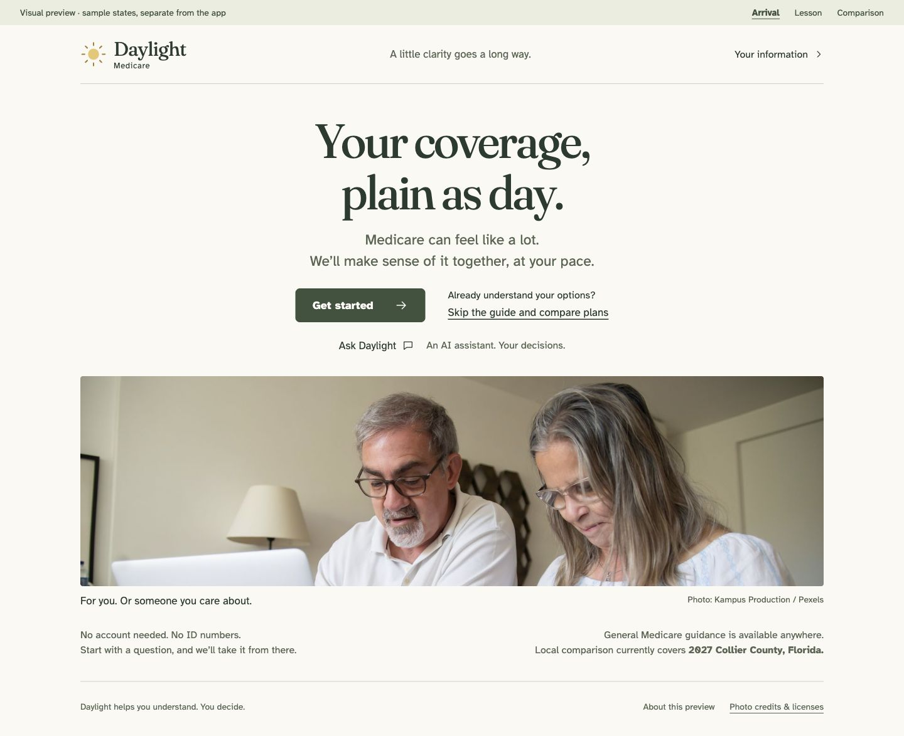
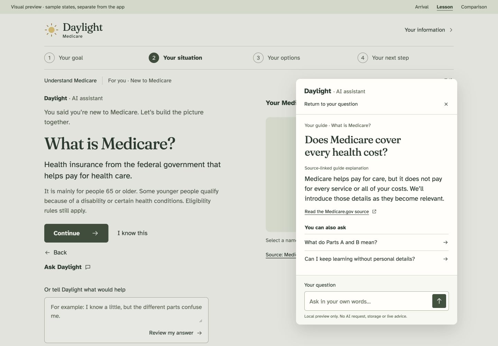
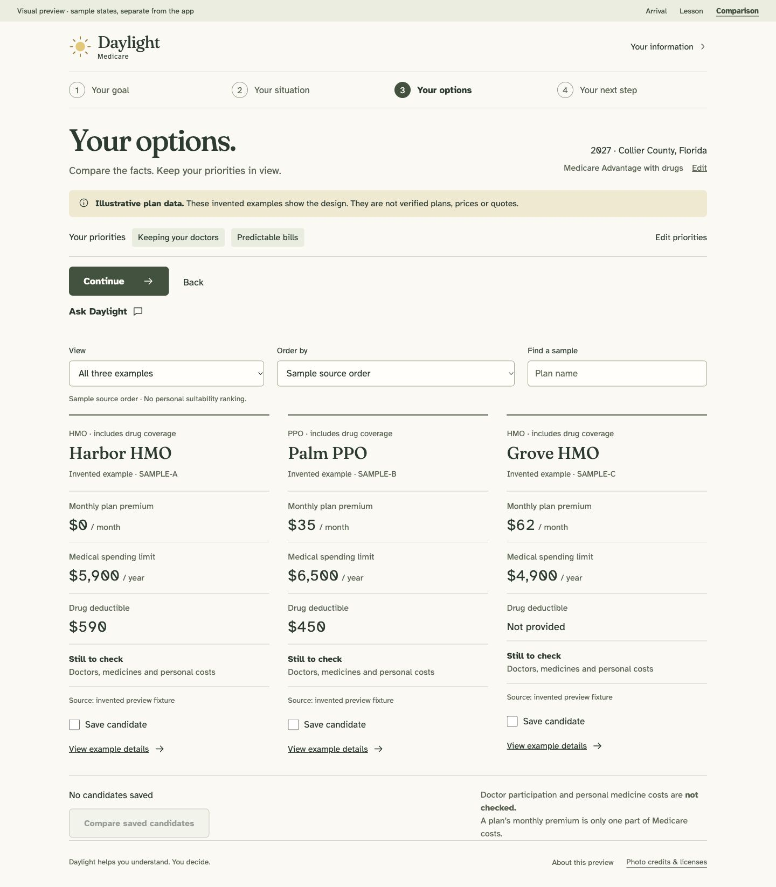
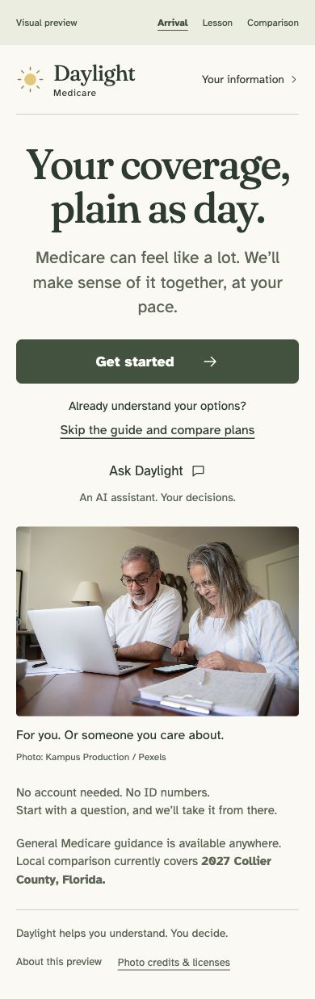
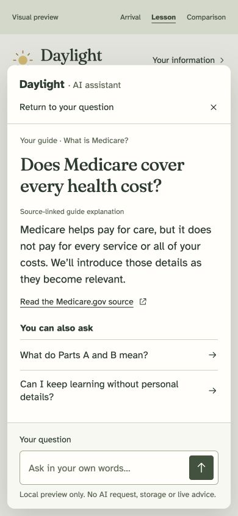
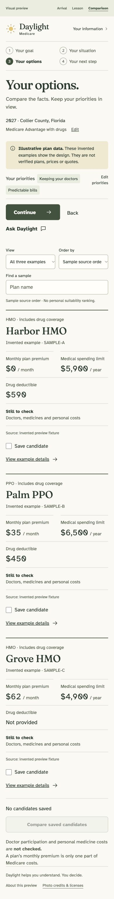

Three independent visual states, on desktop and phone. Click a capture to inspect at its original size. Photographs are licensed source photographs; plan records are invented fixtures. This is an aesthetic review, not the working app.
Open clickable preview · Review notes · Photo credits





